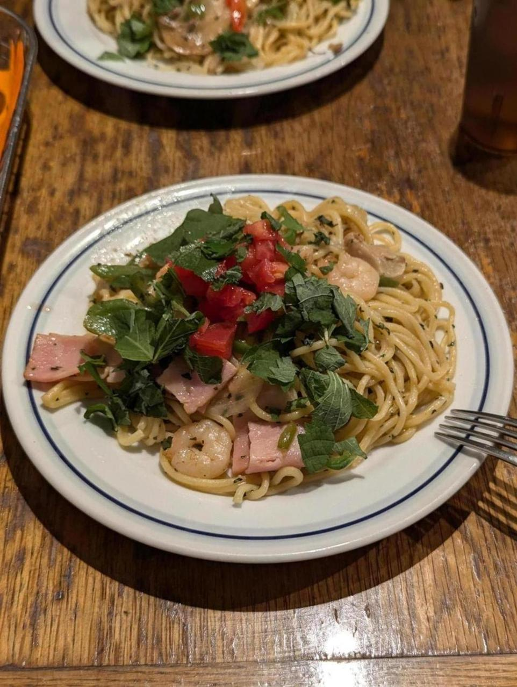
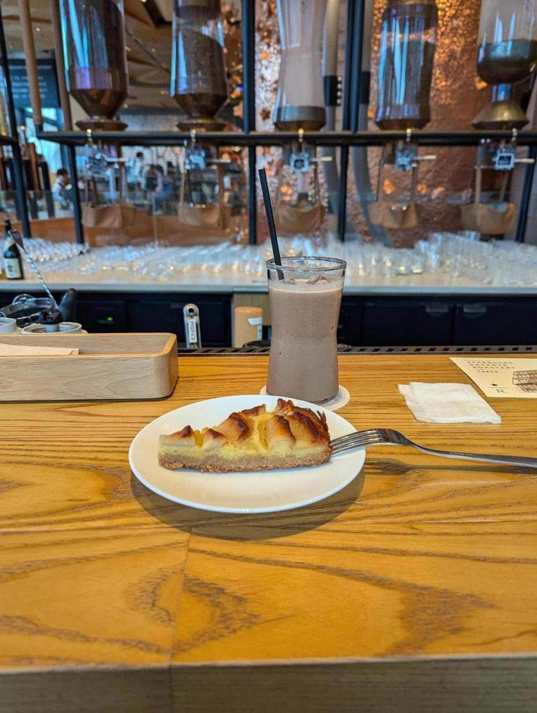
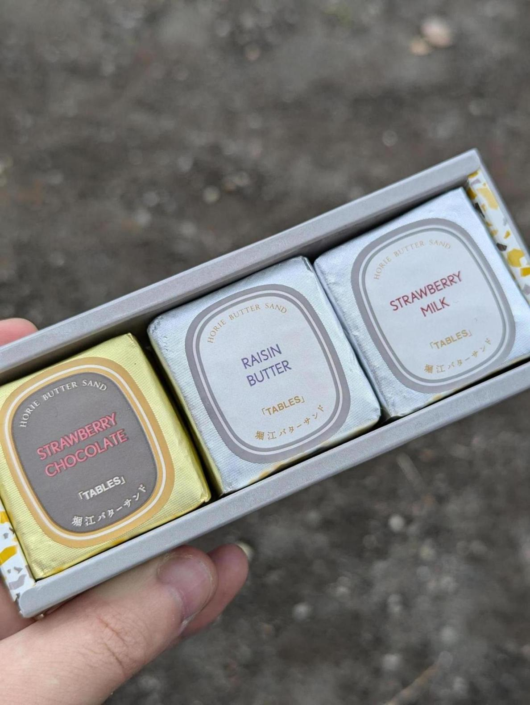

シャオミのポップアップストアを見に渋谷に行った。Xiaomi TV A Pro 2025の実物を見に。
画質は驚くほど良く、この価格ならこれでいいじゃんというものだった。近い内にリビングに置くチューナーレスのモニタはシャオミで買うと思う。仕事用のモニターは、ハーフグレアなのが気になりまだ悩み中。
写真は中目黒の関谷スパゲッティの醤油バジリコ。昔中目黒に住んでた頃にたまに行った店。関谷スパゲッティは安くて美味い。

中目黒に来たので、スターバックスリザーブロースタリーにも来た。死ぬほど混んでる。クオリティは高いと思うが、ここはカフェというよりテーマパークだな。

渋谷で買ったTABLESのクリームサンド。ラムレーズンとストロベリーチョコレートを食べた。美味い。
本当は幡ヶ谷のkasikiにも行ってみたかったのだが、お腹がいっぱいだったので辞めた。 いい一日。